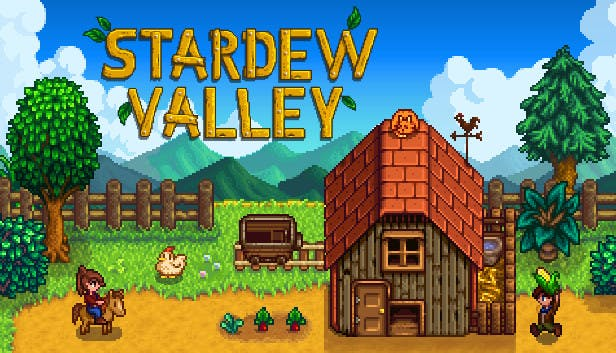
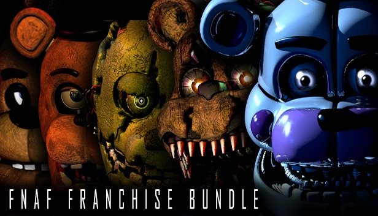
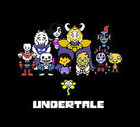

Fun Games to Check Out

"Stardew Valley"
by: Concerned Ape
Stardew Valley is a simulation role-playing game. The player is has recently inherited their grandfather's farm land. As an escape from their busy city life, they become the new farmer in Stardew Valley. This game gives the player the option to build relationships with the townspeople, fight and explore the mines, fish, and of course farm to their hearts content.

"Five Nights at Freddy's"
[Franchise]
by: Scott Cawthon
Five Nights at Freddy's is a very popular franchise. Originally, what was supposed to be a trilogy has become a game with several sequels and prequels that tell several stories. The main theme of the game is to survive Five nights with animatronics hunting you.

"Undertale"
by: Toby Fox
Undertale revolutionized and revived the indie game industry. The games' unique style, soundtrack, and storytelling caught the attention of many individuals. The game created an engaging fanbase and encouraged the development of the games' prequel, "DeltaRune".